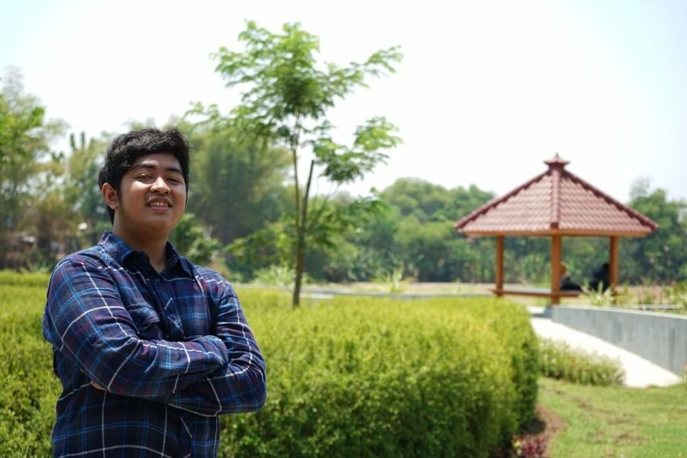

<!DOCTYPE html>
<html lang="id">
<head>
<meta charset="UTF-8">
<meta name="viewport" content="width=device-width, initial-scale=1.0">
<title>Tentang Kami — YR Studio</title>
<meta name="description" content="YR Studio: komunitas fotografer & videografer dari Ngawi, Jawa Timur. Dikelola Yusuf Rachmawan.">
<link rel="canonical" href="https://www.yrstudio.id/tentang-kami/">
<meta property="og:type" content="article">
<meta property="og:title" content="Tentang Kami — YR Studio">
<meta property="og:description" content="YR Studio: komunitas fotografer & videografer dari Ngawi, Jawa Timur. Dikelola Yusuf Rachmawan.">
<meta property="og:url" content="https://www.yrstudio.id/tentang-kami/">
<meta property="og:image" content="https://www.yrstudio.id/assets/images/manager.jpg">
<meta property="og:site_name" content="YR Studio">
<meta name="twitter:card" content="summary_large_image">
<link rel="icon" href="../favicon.ico">
<link rel="preconnect" href="https://fonts.googleapis.com">
<link rel="preconnect" href="https://fonts.gstatic.com" crossorigin>
<link rel="stylesheet" href="https://fonts.googleapis.com/css2?family=Cormorant+Garamond:ital,wght@0,400;0,500;0,600;1,400;1,500&family=Fraunces:ital,wght@0,400;0,500;0,600;1,400&family=Playfair+Display:ital,wght@0,400;0,500;0,600;1,400&family=Instrument+Serif:ital@0;1&family=Inter:wght@400;500;600&family=Plus+Jakarta+Sans:wght@400;500;600&family=JetBrains+Mono:wght@400;500&display=swap">
<link rel="stylesheet" href="../assets/css/site.css">
<link rel="stylesheet" href="../assets/css/site-extra.css">
<script src="https://unpkg.com/react@18.3.1/umd/react.production.min.js" integrity="sha384-DGyLxAyjq0f9SPpVevD6IgztCFlnMF6oW/XQGmfe+IsZ8TqEiDrcHkMLKI6fiB/Z" crossorigin="anonymous"></script>
<script src="https://unpkg.com/react-dom@18.3.1/umd/react-dom.production.min.js" integrity="sha384-gTGxhz21lVGYNMcdJOyq01Edg0jhn/c22nsx0kyqP0TxaV5WVdsSH1fSDUf5YJj1" crossorigin="anonymous"></script>
<script src="https://unpkg.com/@babel/standalone@7.29.0/babel.min.js" integrity="sha384-m08KidiNqLdpJqLq95G/LEi8Qvjl/xUYll3QILypMoQ65QorJ9Lvtp2RXYGBFj1y" crossorigin="anonymous"></script>
</head>
<body>
<div id="app"></div>
<script type="text/babel" src="../assets/js/components.jsx"></script>
<script type="text/babel" src="../assets/js/tweaks-panel.jsx"></script>
<script type="text/babel" src="../assets/js/yr-tweaks.jsx"></script>
<script type="text/babel">
function TentangPage() {
  useReveal();
  return (
    <>
      <Nav active="tentang" depth={1} />

      <section className="page-hero">
        <div className="container">
          <span className="eyebrow" style={{display:"block", marginBottom: 16}}>Tentang YR Studio</span>
          <h1>Komunitas <em>kreatif,</em><br/>dari Ngawi.</h1>
          <p className="lead">Sejak 2020, YR Studio jadi rumah bagi fotografer & videografer muda yang bertumbuh bersama. Kami percaya momen tak terulang patut diabadikan dengan rasa, bukan sekadar prosedur.</p>
        </div>
      </section>

      <section className="section">
        <div className="container">
          <div className="manager reveal">
            <div className="photo">
              
            </div>
            <div>
              <span className="eyebrow">Manager · Founder</span>
              <h2 style={{marginTop: 16}}>Yusuf<br/><em>Rachmawan.</em></h2>
              <p style={{marginTop: 32, fontFamily: "var(--serif)", fontSize: 22, lineHeight: 1.55, color:"var(--ink-soft)"}}>
                "Saya mulai memotret saat kuliah Komunikasi di UMS, dan sejak itu kamera nggak pernah lepas dari tangan. YR Studio lahir dari hobi yang dibagi bareng teman-teman Ngawi — sekarang jadi tempat kami melayani siapa pun yang ingin momennya tetap hidup setelah hari berlalu."
              </p>
              <div style={{marginTop: 32, display:"flex", gap: 28, flexWrap:"wrap", color:"var(--muted)", fontSize: 13}}>
                <span>Fotografer</span>
                <span>Videografer</span>
                <span>Content Creator</span>
                <span>Universitas Muhammadiyah Surakarta</span>
              </div>
            </div>
          </div>
        </div>
      </section>

      <section className="section" style={{paddingTop: 0}}>
        <div className="container">
          <div className="reveal" style={{display:"grid", gridTemplateColumns:"1fr 1fr", gap: 80, paddingTop: 60, borderTop: "1px solid var(--rule)"}}>
            <div>
              <span className="eyebrow">Awal Mula</span>
              <h3 style={{marginTop: 16}}>Lahir dari kerja bareng.</h3>
            </div>
            <p style={{fontFamily:"var(--serif)", fontSize: 20, lineHeight: 1.6, color:"var(--ink-soft)"}}>
              Awalnya kami komunitas kecil yang sering kerjain proyek bareng — foto pernikahan, lamaran, lomba, sampai berbagai acara di Ngawi. Seiring waktu, ini berkembang jadi studio yang punya tim tetap, peralatan lengkap, dan ratusan klien.
            </p>
          </div>

          <div className="reveal" style={{display:"grid", gridTemplateColumns:"1fr 1fr", gap: 80, paddingTop: 60, marginTop: 60, borderTop: "1px solid var(--rule)"}}>
            <div>
              <span className="eyebrow">Tujuan</span>
              <h3 style={{marginTop: 16}}>Wadah talenta muda.</h3>
            </div>
            <p style={{fontFamily:"var(--serif)", fontSize: 20, lineHeight: 1.6, color:"var(--ink-soft)"}}>
              Kami ingin YR Studio jadi tempat fotografer & videografer muda di Ngawi belajar bareng — saling mengkurasi karya, mencoba alat baru, dan menemukan suaranya sendiri. Kalau kamu pemula yang ingin gabung, follow Instagram <a href="https://instagram.com/artrowcreative" target="_blank" rel="noopener" style={{borderBottom:"1px solid"}}>@artrowcreative</a> dan kirim DM.
            </p>
          </div>

          <div className="reveal" style={{display:"grid", gridTemplateColumns:"1fr 1fr", gap: 80, paddingTop: 60, marginTop: 60, borderTop: "1px solid var(--rule)"}}>
            <div>
              <span className="eyebrow">Filosofi</span>
              <h3 style={{marginTop: 16}}>Sinematik tapi jujur.</h3>
            </div>
            <p style={{fontFamily:"var(--serif)", fontSize: 20, lineHeight: 1.6, color:"var(--ink-soft)"}}>
              Estetika kami mengutamakan rasa — kami nggak suka pose yang kaku. Kami akan tetap mengarahkan, tapi yang kami cari adalah momen di antara arahan: tatapan yang spontan, tawa kecil, sentuhan yang tak terencana.
            </p>
          </div>
        </div>
      </section>

      <Marquee items={["Sinematik ", "Jujur ", "Kreatif ", "Tim Muda ", "Berbasis Ngawi ", "Sejak 2020 "]} />

      <WaCta />
      <ContactBlock />
      <Footer depth={1} />
      <YrTweaksPanel />
    </>
  );
}
ReactDOM.createRoot(document.getElementById("app")).render(<TentangPage />);
</script>
</body>
</html>
